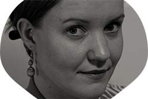

 Hello! My name is Sirpa Karhu and I am an Information Technology Engineer-to-be and a Nurse.
I have started my information technology studies in autumn 2021 at LAB University of Applied Sciences and my goal is to graduate in 2023. My major option is software engineering.
I have a wide range of experience in the health care field as a nurse and my goal in the future is to get to work with IT-solutions for healthcare. My current top interests are front-end web development, UX and data analytics.
At the moment I know for example the basics of HTML, CSS, Javascript, Python, Java and I am eager to learn more!
Persistence, committedness and self-determination are some of my top qualities.
E-mail: sirpa.karhu@student.lab.fi
Tel: +35850 524 6338